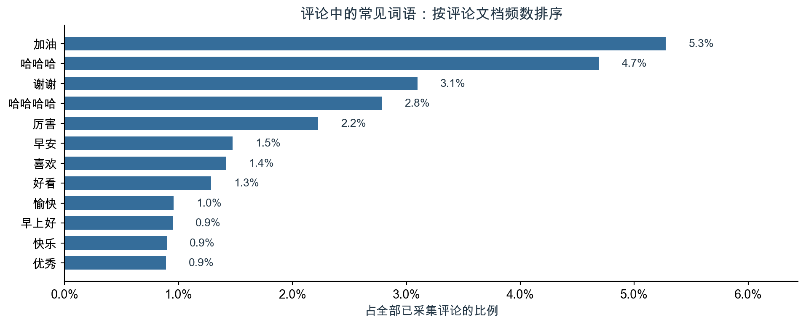
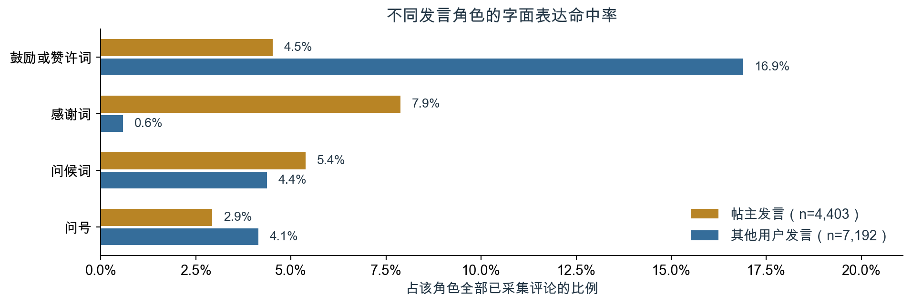

Keep社区内容表达与互动反馈分析报告
帖子内容评价与评论互动管理的证据、判断及行动建议
组别：第【待填写】组 小组成员及学号：【待填写】
报告日期：2026年10月20日。帖子观测期为2020年11—12月（UTC）；已采集评论最晚延续至北京时间2021年8月26日。
执行摘要
本研究支持先建立可比较的内容与互动评价口径，暂不支持将特定词语或主题直接设为提高点赞的运营规则。在100位作者的9,532条帖子中，部分表达的命中组具有更高的原始平均点赞，但控制作者、发帖日期和帖子情境后，五项核心文本特征的联合检验p=0.130。主题回归也未提供明确的增量关联证据。高赞帖中常见的表达可以成为研究线索，尚不足以转化为要求用户采用某种用词的依据。[2][3][4]
评论评价需要同时回答“多少人或多少条评论得到回应”和“回应中表达了什么”。样本中的明确回复主要由帖主发出，前10位账号接收了54.0%的非自我互动事件，说明交流围绕部分接收者展开。直接配对分析又显示，鼓励或赞许词命中组在已观察到的直接回复中更常出现感谢词，但该组观察到直接回复的比例较低。感谢表达与回应覆盖衡量不同侧面，单一词频或评论次数不足以代表交流质量。[5][6][10]
建议按顺序推进三项工作：先统一点赞与评论的观察范围、分母和角色定义，再补充真实曝光与文本语义验证，最后决定是否开展表达提示或回应支持的对照研究。近期交付重点应是指标字典、可比样本和可评估的验证方案；方案是否提高点赞、交流体验或留存，仍需后续证据。上述判断仅适用于这批课程数据，不代表Keep当前的整体经营状况。
1. 研究题目
研究题目为《Keep社区中的内容表达与互动反馈》。报告服务于两个相互关联的判断：一是内容评价能否依据文本表达形成可执行的规则，二是互动评价应如何兼顾参与范围、回应内容与用户连接。点赞用于衡量帖子已经记录到的累计反馈；评论文本用于观察回应语言；评论网络用于识别回应对象及事件分配。三类信息共同描述社区反馈，各自保留独立的统计单位。
| 编号 | 研究问题 | 分析对象与方法 | 对应章节 |
|---|---|---|---|
| RQ1 | 样本帖子、表达方式及点赞如何分布？ | 描述帖子、作者、媒体形式与正文覆盖；统计编码后的表达特征 | 第三章、第4.1节 |
| RQ2 | 不同文本特征与点赞是否相关？ | 词典主回归、敏感性检验、帖子主题与主题回归、作者等权比较 | 第四章 |
| RQ3 | 采集到的评论主要表达什么、如何连接用户？互动集中在哪里？ | 评论语言与角色分布、直接回复配对、互动网络、观察窗口比较 | 第五章 |
研究仅使用课程提供的Keep帖子与评论两份CSV。文件名中的“2022”不作为观测年份，分析以实际时间字段为准；UTC年底的少量帖子转换为北京时间后跨至2021年1月1日。抽样机制、统一采集时点及完整曝光记录均不明确，因此结论限定于样本内的分布、条件关联和已采集互动。[1]
全文先建立比较基础，再讨论表达关联，最后评价评论互动。第三章说明哪些记录可见、反馈差异如何分布；第四章将帖子正文结构化，区分字面表达、内容主题与点赞关联；第五章从评论语言推进到直接回应和关系结构；第六章综合解释证据，第七章提出分阶段的行动建议。帖子主题与评论分析分别保留在第四、五章，发帖后的评论网络不作为发帖前的点赞解释变量。
2. 研究问题的意义
内容运营需要能够区分可复制的表达规律与样本构成造成的表面差异。若直接依据高赞帖提炼用词规则，作者既有受众、媒体形式和曝光机会都可能被误归于文本本身。已有结果恰好呈现了这一问题：命中某些词语的帖子平均点赞较高，作者内比较却没有给出相同判断。研究的价值在于明确，哪些经验可以进入内容评价，哪些仍只能作为待验证线索。[2][3]
互动管理还面临另一项区分：活动量并不直接代表参与广度。少数用户的重复评论可以累积出较高次数，少数账号也可以接收大量回应。即使某类用语在已回复记录中更常见，也未必意味着更多评论得到回复。因此，需要将评论内容、独立参与者、回应角色与用户连接放在各自的分母下理解，才能判断一项指标究竟反映了什么。[5][6][10]
这两个问题决定了报告的论证顺序。内容分析着重检验表达与反馈是否存在可识别的统计关系，评论分析着重描述互动由谁发起、如何承接、向谁集中。两者共同为评价口径和后续验证提供依据；本研究没有估计它们对点赞的相对因果贡献，也没有把平台内互动等同于运动坚持、健康改善或用户留存。
3. 描述性统计分析
样本比较首先受到正文可见性、媒体形式和作者发帖量差异的影响。理解这些差异，是后续解释文本系数和互动指标的前提。本章据此回答RQ1，并明确回归与评论分析各自能够覆盖的范围。
3.1 正文覆盖不均，内容评价必须保留缺失与采集边界
正文缺失集中于特定媒体形式和作者，不能将其统一解释为缺少表达。图片帖的正文覆盖率为76.0%，视频帖为89.1%，纯文字帖为100.0%，无媒体帖仅为0.1%。5位作者完全没有可用正文，26位作者的帖子均有正文，作者正文覆盖率中位数为84.3%。这些差异说明，文本变量观察到的只是帖子表达的一部分。[4]

| 数据环节 | 既有核查结果 | 对分析的影响 |
|---|---|---|
| 帖子主键 | 9,532条帖子ID唯一，涉及100位作者 | 帖子作为回归的观察单位 |
| 评论去重 | 原始13,511行，删除1,916行重复ID后保留11,595条；重复记录无字段冲突 | 保留不同ID下的重复短句 |
| 评论关联 | 所有去重评论均可关联帖子，覆盖1,323帖 | 未覆盖帖子不能赋为零评论 |
| 正文可用性 | 3,984帖无可用正文，5,548帖有可见字符；清理后非空正文为5,414条 | 全样本回归保留正文可用状态变量 |
| 点赞与浏览 | 8,286帖的点赞大于记录浏览数，统计口径不能确认 | 不计算点赞率，不以浏览数作为曝光量 |
来源：[1][2][4]。
既有分析完成了主键核对、评论去重、帖子关联和时间解析。正文为空的帖子保留在主回归中，文本计数设为0，并设置正文可用状态变量；评论没有被采集到的帖子则保留覆盖未知状态。两种处理针对不同问题：前者区分正文记录是否可用，后者避免将缺失评论误记为零互动。时间字段按UTC解析，发帖日期与时段统一转换为北京时间。[1][2]
记录生成或采集方式可能造成覆盖差异，但当前字段不能确认具体原因。图片文字和视频语音也未进入正文分析。因此，内容形式和正文可用状态需要共同保留，文本结论须注明适用样本。模型中的缺失指示变量能够区分记录状态，不能替代缺失内容；这一边界也决定了后续主题分析只能针对符合文本条件的子样本开展。
3.2 点赞呈长尾分布，媒体组差异尚不能直接用于内容策略
平均点赞高于中位数，且少量帖子获得很高反馈，说明样本均值容易受到长尾记录影响。全部帖子的平均点赞为37.05，中位数为25，最大值为5,126，零点赞比例为3.8%。作者发帖数中位数为66，最多者发布783帖；因此，按帖子汇总也会使高产作者贡献更多观察值。[2]


| 内容形式 | 帖子数 | 样本占比 | 平均点赞 | 点赞中位数 |
|---|---|---|---|---|
| 图片 | 5,790 | 60.7% | 51.03 | 41 |
| 无媒体 | 2,493 | 26.2% | 3.91 | 3 |
| 纯文字 | 301 | 3.2% | 7.94 | 4 |
| 视频 | 948 | 9.9% | 48.05 | 36 |
来源：[2]中的media_summary.csv、descriptive_statistics.csv与summary.json。
图片和视频帖的原始点赞均值、中位数均高于另外两类，但不同形式也可能对应不同作者、业务类别和内容情境。该比较能够指出反馈分布的差异，尚未分离媒体形式本身的作用。以此制定内容策略前，还需要可比的曝光和观察窗口；本项目因此将媒体形式纳入回归控制，并进一步比较同一作者的不同帖子。
在评价实践中，均值与中位数宜同时呈现，作者构成也应作为解释条件。第四章沿着这一比较思路，将原始组间差异推进到控制作者与发帖情境后的关联检验，考察所选文本特征究竟提供了多少额外信息。
4. 非结构化数据的结构化与回归分析
词典与主题两种文本表示都具有可解释、可复现的用途，但现有回归未为提高点赞的表达规则提供充分证据。词典描述指定用语，主题概括正文内容；两者分别检验，能够减少将高频表达、作者习惯和反馈效果混为一谈的风险。
4.1 词典将表达转为可复查变量，语义含义仍需核实
字面规则使文本能够进入回归，也使测量边界可以被检查。自律或目标词在样本中相对常见，社交称呼和问号则较少；只有部分作者在不同帖子之间发生特征取值变化。这意味着作者内比较可利用的信息并不均匀，尤其不宜对低频特征的估计作过强解释。[2][7]

| 结构化变量 | 操作性定义 | 命中帖数 | 全部帖子占比 | 有作者内变动的作者数 |
|---|---|---|---|---|
| 正文长度 | 清理后非空白字符数，回归使用ln(1+长度) | 不适用 | 不适用 | 不适用 |
| 自律或目标词 | 命中“坚持”“打卡”“目标”等词，或“第N天”模式 | 877 | 9.2% | 76 |
| 社交称呼或互助词 | 命中“大家”“一起”“谢谢”等词 | 159 | 1.7% | 42 |
| 积极表达词 | 命中“开心”“喜欢”“哈哈”等词 | 574 | 6.0% | 64 |
| 问号 | 正文含半角或全角问号 | 125 | 1.3% | 32 |
来源：[2]中的text_features_summary.csv；完整词表与匹配规则见[7]。
结构化过程先还原换行，再移除URL、成对课程分享后缀、方括号表情标记和空白，生成正文长度及词典变量。每个维度命中任一项记为1，重复出现不累加，维度之间允许重叠；话题标签单独编码。分词统计采用jieba和停用词过滤，并在每帖内部去重后计算文档频数，避免重复用词放大一条帖子的贡献。正文可用状态、话题、表情和课程分享标记另作辅助控制。[7][9]
既有40个“帖子—特征”语义边界检查单元显示，字面命中与目标含义可能存在偏差。“完成”不一定指运动目标，“一起”可能描述线下活动，问号也可能出现在反问中。该检查由Codex辅助完成，未采用独立人工双编码，不能用于估计总体准确率。因而，词典变量适合被解释为指定表达的代理；将其用于内容质量评价或真实需求识别，还需要独立语义验证。
4.2 控制作者与发帖情境后，原始点赞优势未形成明确关联证据
主模型的五项核心文本特征联合检验p=0.130，额外解释信息有限。模型R²为0.688，但相对保留同样控制项、仅去掉核心文本特征的模型，R²只增加0.065个百分点。总体拟合度包含作者与帖子情境等控制项的贡献，不宜据此判断词典已经较好解释了点赞差异。[2][3]

| 核心变量 | 系数 | 聚类标准误 | 原始95%置信区间 | 原始p值 | BH校正q值 |
|---|---|---|---|---|---|
| 正文长度ln(1+字数) | 0.028 | 0.018 | [-0.008, 0.064] | 0.130 | 0.293 |
| 自律或目标词 | -0.119 | 0.087 | [-0.293, 0.054] | 0.176 | 0.293 |
| 社交称呼或互助词 | -0.004 | 0.064 | [-0.131, 0.122] | 0.946 | 0.946 |
| 积极表达词 | -0.086 | 0.035 | [-0.155, -0.016] | 0.016 | 0.079 |
| 问号 | 0.108 | 0.105 | [-0.100, 0.316] | 0.307 | 0.383 |
来源：[3]。因变量为ln(1+点赞数)，主模型使用9,532帖、100位作者。
原始均值与控制后的比较提供了不同信息。积极表达词命中帖的平均点赞为57.29，未命中帖为35.76，主模型中的系数却为负。这说明组间差异并不能直接解释为同一作者改变表达后的结果。作者构成、内容情境或未记录的曝光可能与差异有关，当前设计尚未区分这些机制。[2][3]
既有模型依次从基础关联推进到作者固定效应，再加入北京时间发帖日期固定效应。主模型M3写作：ln(1+点赞ᵢₜ) = αᵢ + δᵈ + β′Xᵢₜ + γ′Zᵢₜ + εᵢₜ。其中，X为五项核心文本特征，Z包括正文可用状态、话题和表情等标记、内容形式、业务类型与发帖时段；作者内不变的属性由作者固定效应吸收。标准误按100位作者聚类，采用CR1小样本修正和99个推断自由度，对五项核心系数进行BH校正。[3]
积极表达词的原始p值为0.016，校正后q值为0.079，未达到5%水平。其点估计对应“1+点赞数”条件几何均值约低8.2%，并非点赞算术均值或改变用词后反馈的确定变化。对于内容管理，这项结果保留了一个需要解释的关联线索，尚不足以支持增加或减少积极表达的运营指令；后续还需结合模型敏感性判断其可靠程度。
4.3 负向点估计在部分检验中稳定，业务应用仍缺少充分依据
逐作者剔除和样本调整表明，积极表达词的负向OLS点估计不由单一作者或少量极端帖子独自决定；计数模型与多重检验则继续限制这一发现的解释强度。这些检验回答不同问题，应共同用于判断适用范围。[3][4]


| 积极表达词的补充设定 | 样本量 | 系数 | 原始95%置信区间 | 原始p值 |
|---|---|---|---|---|
| 仅可见正文 | 5,548 | -0.090 | [-0.164, -0.015] | 0.019 |
| 去除点赞最高1% | 9,436 | -0.082 | [-0.152, -0.012] | 0.022 |
| 作者等权 | 9,532 | -0.128 | [-0.219, -0.036] | 0.007 |
| PPML计数模型 | 9,532 | -0.135 | [-0.299, 0.028] | 0.103 |
来源：[3][4]。表中为各设定的原始p值，敏感性比较不替代主分析的多重检验结果。
仅可见正文设定考察缺失记录处理，去除最高1%点赞考察极端值，作者等权降低高产作者在估计中的权重。几种OLS设定仍得到负系数；PPML以原始点赞数建模，其区间包含零。两类模型分别刻画对数变换后的反馈和原始计数的条件期望，差异不应被简化为对同一效果的重复测量。
在100次逐作者剔除结果中，积极表达词系数均为负，范围为[-0.100, -0.074]；社交称呼或互助词则会改变符号。积极表达点估计的符号未由单一作者决定，但语义代理、遗漏因素和因果识别问题仍未解决。后续核实的重点是曝光、情境和语义测量，判断这一关联能否在更可比的条件下保持。
4.4 主题概括了主要内容模式，尚未提供明确的增量点赞关联
主题分析使正文内容从指定词语扩展到较完整的表达模式。有效正文主要分布在运动训练和生活感悟两类主导主题中；但将主题权重加入原有控制后，联合检验p=0.166，各项BH校正后均未达到5%水平。内容分类因而具有描述价值，尚未形成可直接用于提高点赞的主题排序。[4]

| 帖子主题 | 主导文档数 | 主导占比 | 回归系数 | 原始95%置信区间 | 原始p值 | BH校正q值 |
|---|---|---|---|---|---|---|
| 靠墙静蹲记录 | 85 | 3.4% | -0.315 | [-0.636, 0.005] | 0.054 | 0.107 |
| 骑行里程记录 | 85 | 3.4% | 0.018 | [-0.523, 0.558] | 0.948 | 0.948 |
| 运动与训练交流 | 1,302 | 52.7% | 基准 | 不适用 | 不适用 | 不适用 |
| 跑步与训练打卡 | 113 | 4.6% | -0.471 | [-1.048, 0.105] | 0.108 | 0.144 |
| 生活感悟与问候 | 885 | 35.8% | -0.144 | [-0.278, -0.010] | 0.035 | 0.107 |
来源：[4]。主导主题为每帖权重最大的成分；回归使用连续主题权重，系数对应相对基准主题的1单位权重变化。
既有分析对至少含3个过滤后有效词的2,478条正文构建TF-IDF矩阵，再以非负矩阵分解（NMF）提取五个主题。8条成分贡献接近零的正文不强制归类，最终2,470帖、86位作者进入主题描述和回归，词表含1,046项。TF-IDF用于表示词项在文本中的相对重要性；NMF成分经尺度校正后归一化为文档权重，权重表示相对贡献，并非主题后验概率。主题数在首次拟合前固定，命名不使用点赞结果。[4]
主题回归在同一有效正文子样本中保留词典特征和控制项，加入相对基准主题的四个权重。它与全样本主回归的文本表示、纳入范围均不同，结果不能视为同一检验的重复验证，也不直接比较两者R²。三次初始化的前10关键词平均Jaccard为1.000，只表明初始化稳定；回归区间也未计入主题估计本身的不确定性。对于内容分类，这些主题可用于整理和描述已见正文，判断普遍性还需要考察作者构成。
4.5 作者等权保留主要格局，小主题占比受作者构成影响
高产作者对按帖统计的主题分布贡献较大。靠墙静蹲主题中，最大作者贡献91.8%的主导文档，骑行里程主题中对应比例为68.2%。作者等权比较进一步显示，主要内容格局相对稳定，部分小主题的规模则明显依赖帖子贡献的集中程度。[4][10]
| 主导主题 | 帖子等权占比 | 作者等权占比 | 占比差（百分点） |
|---|---|---|---|
| 靠墙静蹲记录 | 3.4% | 0.6% | -2.82 |
| 骑行里程记录 | 3.4% | 2.9% | -0.53 |
| 运动与训练交流 | 52.7% | 52.6% | -0.08 |
| 跑步与训练打卡 | 4.6% | 5.7% | +1.10 |
| 生活感悟与问候 | 35.8% | 38.2% | +2.33 |
来源：[10]。范围为既有2,470帖、86位作者；占比差以未舍入数值计算，正值表示作者等权后的占比更高。
作者等权先计算每位作者内部的主导主题占比，再对86位作者平均；每条正文的原有归类保持不变。该结果反映每位作者贡献相同总权重时的平均构成，与按帖子计量的目标不同，不代表权重调整后更接近平台总体。两个口径都限定于有效正文样本。
运动与训练交流仍是最大主题，靠墙静蹲记录的占比则从3.4%降为0.6%。这一结果为区分跨作者的常见内容与个别作者反复使用的记录方式提供了依据。内容分类可以保留这些差异，但小主题占比变化不意味着需求下降；分布对权重较稳定，也不意味着其与点赞的关联已经得到确认。至此，RQ2得到的回答是：文本可以被清楚地结构化和分类，现有证据尚不足以据此制定增赞规则。
5. 评论文本与互动网络分析
评论分析将评价重点从帖子获得多少反馈，转向回应如何发生。语言统计描述可见表达，直接配对核实部分词语的先后关系，网络再说明互动向谁分配。按照这一顺序，可以分别理解回应内容、回应覆盖和关系结构，而不将任何单一指标直接当作交流质量。
5.1 评论以短表达为主，语言角色和参与覆盖需要分别观察
评论中可以观察到鼓励、感谢和问候等短表达，但频数与参与人数反映的范围不同。“加油”出现在612条评论、覆盖431位用户，“谢谢”出现在359条评论、覆盖53位用户。后者说明，某个词进入高频列表，并不一定意味着它被同样广泛的参与者使用。[5]

| 观察维度 | 既有结果 | 解释口径 |
|---|---|---|
| 评论长度 | 清理后字符数中位数6，75分位数10 | 描述移除URL、方括号标记等后的长度 |
| 标记或符号 | 1,373条，占11.8% | 清理后不含汉字、字母或数字 |
| 常见词“加油” | 612条评论，431位用户 | 每条评论内至多计一次 |
| 常见词“谢谢” | 359条评论，53位用户 | 词项频数，不等同于完整感谢词类 |
| 重复表达 | 3,362条评论具有重复的标准化文本 | 不同评论ID下保留，不按重复短句删去 |
来源：[5]。
文本统计覆盖2,910位发言者的全部去重评论。处理先统一全半角和空白、移除URL与方括号标记，再分词并过滤停用词；每条评论内的词项去重后计数。不同ID下的相同短句和84次自我互动仍保留。由此得到的是已采集语言的分布，短、重复或仅含符号本身不能作为交流质量的判断标准。[5][8]
进一步按发言角色区分后，其他用户更常命中鼓励或赞许词，帖主更常命中感谢词。这使围绕帖主的语言分工成为值得检视的解释：参与者表达赞许，帖主作出回应。但角色分布尚未说明某条感谢是否直接承接了先前的鼓励，仍需用具体评论指向核对。

| 字面特征 | 全部评论命中数 | 全部评论占比 | 其他用户命中率 | 帖主命中率 |
|---|---|---|---|---|
| 鼓励或赞许词 | 1,413 | 12.2% | 16.9% | 4.5% |
| 感谢词 | 389 | 3.4% | 0.6% | 7.9% |
| 问候词 | 551 | 4.8% | 4.4% | 5.4% |
| 问号 | 427 | 3.7% | 4.1% | 2.9% |
来源：[5]。其他用户发言为7,192条，帖主发言为4,403条；角色按每条评论与所属帖子的关系界定。
四类规则沿用固定词表，维度可重叠。“谢谢”是单个词项，感谢词类还包括“感谢”等表达，因此两个计数口径不同。同一用户也可在不同帖子中切换角色，去重人数不能跨角色直接相加。规则未经独立人工语义验证，命中描述的是文字线索；未命中不等于相应含义不存在，问号也不等于真实提问。业务使用中，词项频数应与角色、去重用户覆盖同时展示，避免将发言频繁误写成参与广泛。[5][8]
5.2 感谢词命中率与直接回复覆盖呈现不同的组间差异
直接配对呈现了一个需要同时解释的结果：鼓励或赞许词命中组在已观察到的直接回复中更常出现感谢词，但观察到直接回复的根评论占比低于未命中组。前者描述已回复内容，后者描述回应覆盖，不能据此概括为鼓励用语使评论更容易得到回复。[10]
| 外来根评论组别 | 根评论数 | 涉及帖主数 | 观察到7天内直接回复 | 最早观测回复命中感谢词 |
|---|---|---|---|---|
| 命中鼓励或赞许词 | 1,180 | 54 | 513（43.5%） | 137（26.7%） |
| 未命中鼓励或赞许词 | 5,429 | 77 | 3,055（56.3%） | 195（6.4%） |
来源：[10]。直接回复占比以各组全部根评论为分母；感谢词命中率只以各组观察到直接回复的根评论为分母。同一帖主可出现在两组，涉及帖主数不能相加。
配对以6,609条外来根评论为起点。回复须由帖主发出，reply直接指向该根评论，replyUserId为根评论作者，所属帖子与parentId也须匹配；时间不早于根评论且间隔不超过168小时。每条根评论只观察该窗口内最早被采集的直接回复时点，检查其感谢词命中情况，合计3,568条根评论具有符合条件的回复。这里的7天从根评论起算，与第5.4节从发帖起算的网络窗口不同，也不保证每条根评论都获得完整七天采集。
若以各组全部根评论为分母，最早回复含感谢词的观测占比分别为11.6%和3.6%。这为部分跨评论的词语顺序提供了可核对证据，但两组涉及的帖主、内容情境和采集覆盖均可能不同；感谢率又以观察到回复为条件，不能解释为鼓励用语的因果效果。最早观测回复未必是实际首次回复，未见匹配也不等于真实没有回应。
对互动管理的直接启示，是将“回应覆盖”和“回应内容”作为并列指标。感谢表达可以补充说明已观察到的交流如何承接，却无法独立回答有多少评论得到回应。角色差异与配对结果共同描述了部分语言互动，网络分析则进一步考察这些回应集中在什么位置。
5.3 多数节点在忽略方向后连通，接收事件集中于少数账号
采集到的互动在忽略方向后形成较大的连通结构，同时保留明显的接收集中。最大弱连通分量包含94.4%的有边节点，前10位账号却接收54.0%的非自我事件。连接范围与事件分配可以同时呈现这两种特征，不能仅用其中一项描述社区互动。[2][6]


| 网络指标 | 既有结果 | 具体含义 |
|---|---|---|
| 互动事件 | 11,511次 | 6,609次根评论及4,902次明确回复 |
| 有边节点与有向边 | 2,932个节点、4,069条边 | 同一发送者—接收者的事件合并为加权边 |
| 最大弱连通分量 | 2,768个节点，占94.4% | 忽略方向后的连接范围 |
| 整体互惠率 | 49.6% | 有反向边的有向边占比，不按事件加权 |
| 仅明确回复的互惠率 | 29.9% | 改变建边范围后的结果 |
| 前10位接收占比 | 54.0% | 按事件数排序后的接收份额 |
| 样本作者接收占比 | 61.3% | 事件接收对象为样本帖子作者 |
来源：[2][6]。
建图时，根评论指向帖主，明确回复优先使用replyUserId识别接收者，必要时利用已观测的直接回复评论识别。84次自我互动排除，同一发送者与接收者之间的事件累计为边权；既有核查未发现无法确定指向或早于发帖的记录。网络节点同时包括发送者和接收者，因此与评论发言人数不同。图面距离仅服务于连接展示，不表示关系强弱或真实社会距离。[6][9]
集中度还受到样本边界影响。评论从100位作者的帖子出发采集，根评论又按规则指向帖主，这些作者及其活跃互动对象更容易出现在接收中心。整体互惠率与仅明确回复的互惠率不同，也说明建边范围会改变指标。接收排名适合描述样本内分配，不能直接外推为平台影响力排序；管理评价宜分别保留接收事件数、不同发送者数量及角色构成。
5.4 帖主承担多数明确回复，观察窗口影响结构判断
明确回复主要围绕帖主展开。帖主回复其他用户占89.0%，其他用户回复帖主占9.1%，其他用户彼此回复占2.0%，各比例因舍入可能略偏离100%。这一角色结构有助于解释前文的集中接收与互惠性，也提示需要将帖主回应和其他用户之间的交流分别观察。[4][6]

| 观察窗口 | 非自我事件数 | 有边节点数 | 有向边数 | 互惠率 | 前10位接收占比 |
|---|---|---|---|---|---|
| 全部已采集互动 | 11,511 | 2,932 | 4,069 | 49.6% | 54.0% |
| 发帖后7天内 | 9,451 | 1,376 | 2,278 | 74.1% | 48.3% |
来源：[4][6]。
已采集评论中，64.5%发生在发帖后24小时内，82.2%发生在7天内，间隔中位数为11.3小时。按发帖后7天截取的网络具有更高互惠率和较低前10位接收占比，说明晚期记录的纳入会改变结构描述。两个窗口的节点与边集合不同，这种差异不能解释为同一群体的互惠行为随时间发生变化，也不证明各帖都有完整首周采集。
在线程层面，6,609个外来根评论线程中，57.0%观察到帖主参与；这些已参与线程中，最早观测到的帖主回复时延中位数为2.05小时。该口径覆盖线程内的帖主回复，而第5.2节只保留对根评论本身的直接回复，并从根评论起限制时间。两者回答不同问题，不能互换为统一“回复率”。同样，2.05小时以已经观察到帖主参与的线程为条件，不代表所有评论的等待时间。[4][10]
由此，互动评价需要固定事件指向、角色和时间窗口，再解释水平差异。帖主回应在样本中占据主要位置，但回应负担、接收体验及横向交流意愿仍未被直接测量。围绕这些问题设计后续验证，比单独追求互惠率或评论次数更符合当前证据范围。
6. 结果与解释
6.1 内容评价与互动评价需要不同的证据标准
对于内容评价，RQ1首先确认了反馈、媒体形式和正文覆盖的差异，RQ2再检验选定表达是否在这些差异之外提供关联信息。主回归与主题回归均未给出明确的增量证据，因此，当前能够采用的是可复查的内容描述和分类方法；把它们升级为提高点赞的规则，还缺少可比曝光、语义验证和更强的研究设计。[2][3][4]
主题的作者等权比较补充了另一个判断：某类内容在帖子中常见，可能既反映跨作者的表达模式，也反映少数作者的高频记录。主要格局对权重较稳定，使其适合用于概括这批有效正文；小主题的作者集中则要求保留类别适用范围。分类代表性与互动效果应分别评价，前者清楚并不自动证明后者成立。[4][10]
对于互动评价，RQ3表明语言角色、直接回应和关系结构能够相互补充。帖主主导明确回复，与其他用户较常使用赞许词、帖主较常使用感谢词的分布相容；配对分析又把部分语言顺序落实到具体指向。但回复覆盖与已回复内容并未呈现同样的组间差异，说明“多少评论得到回应”和“回应中说了什么”必须并列保留。[5][6][10]
这些证据分别支持内容评价和互动评价，尚未连接成解释点赞的因果路径。评论在发帖后形成，累计点赞的统一采集时点不明，研究未确定二者的完整先后关系。因此，网络中心性和回应量在本报告中用于描述关系，未进入帖子点赞回归，也未被解释为对点赞的促进作用。
6.2 原因解释保留为假设，数据边界决定可应用范围
样本内事实能够限定解释，却不足以确定每项差异的形成原因。下表将已经观察到的结果、与之相容的解释和进一步验证所需信息分开，避免把可能机制写成既定结论。
| 证据问题 | 已观察到的事实 | 解释性判断 | 进一步核实所需信息 |
|---|---|---|---|
| 原始点赞与控制后结果不同 | 部分表达组均值较高，主回归未保留明确关联 | 作者构成、情境与曝光可能参与形成差异 | 可比曝光、统一反馈窗口、内容情境 |
| 小主题受权重影响 | 部分主题由少数作者贡献较多，作者等权后占比收缩 | 反复记录的作者模板可能影响主题构成 | 更广的有效正文、作者内内容核查 |
| 评论语言与覆盖不同 | 角色表达有差异，感谢词命中率与直接回复观察占比方向不同 | 语言角色和已回复记录的构成可能相关 | 独立语义标注、完整回复、接收体验 |
| 网络指标随口径改变 | 明确回复范围与观察窗口改变互惠率和集中度 | 采集边界及参与者构成可能影响结构描述 | 更完整的关系记录、一致的事件与时间定义 |
来源：[2]—[6]及[10]。解释栏均为合理假设，未完成因果验证。
结论的应用范围主要受到三方面约束。其一，抽样框与统一采集时点未知，正文和评论覆盖不完整，既有时间截点不能补回未采集记录。其二，词典和评论规则是字面代理，语义边界检查未构成独立人工效度验证，图片文字与视频语音也未纳入。其三，固定效应能够控制稳定作者差异和日期共同变化，仍未覆盖真实曝光、变化中的受众条件及完整内容质量。
既有数值核查和已执行Notebook为计算一致性提供了依据，推广到平台总体或业务效果仍需额外证据。不显著结果表示当前数据和设定下的信息有限，不能证明表达完全没有作用；描述性的词语顺序与网络结构也没有测量交流体验、留存或运动行为变化。因此，当前适宜落实的是评价口径和验证准备，具体业务干预应在明确条件后推进。
7. 建议
7.1 优先统一评价口径，明确交付成果与责任角色
建议按证据依赖关系安排工作：先统一统计基础，再核实表达测量，最后验证具体方案。这样能够将研究中尚未解决的问题转化为可交付任务，同时避免把探索性结果提前写入内容要求或评价标准。
| 顺序 | 建议工作 | 可交付成果 | 建议牵头角色 |
|---|---|---|---|
| 一 | 统一帖子反馈与评论互动口径 | 指标字典、观察窗口说明、评论覆盖未知标记、人数与事件数分列模板 | 项目数据负责人 |
| 二 | 核实内容比较与语义测量 | 可比曝光和内容范围说明、独立双人编码规范、字面规则误差核查记录 | 数据分析与内容研究人员 |
| 三 | 设计表达提示或回应支持的验证方案 | 预先确定的问题、对照条件、评价指标、观察窗口及实施条件 | 运营与研究负责人 |
以上为建议分工，具体人员待指定；优先顺序不代表已测算的收益或已批准的实施安排。
第一项工作以指标可追溯为完成标准：每个指标列明对象、分母、窗口和缺失处理。评论事件数、去重人数、观测回复覆盖及已回复记录的感谢词命中率分别保留，根评论、明确回复及角色定义固定使用，避免同名指标衡量不同对象。
第二项工作核实文本规则进入评价的条件：以真实曝光和统一窗口改善帖子比较，以独立双人编码检查语义偏差。在这些条件明确前，词典和主题继续用于辅助检索、分类及研究，暂不作为内容奖惩、推荐优先级或强制表达要求的依据。
7.2 在数据与测量就绪后开展对照验证
候选方案应对应具体问题：表达提示关注帖子反馈，回应支持并列考察覆盖与内容，同伴互助观察其他用户之间的参与。这些方向与研究发现相关，效果仍待验证。
由项目负责人明确决策问题，数据分析人员检查曝光、窗口和覆盖条件，内容研究人员确定回复质量标准，再共同制定对照安排。若按作者分配方案，应预先考虑用户互动带来的组间影响。评价指标依目标选取，同时检查参与和回应，避免用感谢词或互惠率单项增长认定整体改善。
曝光与窗口不可比时先补齐记录，语义偏差不清楚时先完成标注，再启动验证。当前未估计干预效果和成本收益，不设缺少依据的量化承诺；是否扩大实施，依据预先定义的指标及实际证据决定。
参考文献与证据来源
[1] 课程提供资料. Keep社区帖子与评论数据及字段字典[DS]. [出版地不详]: [发布者不详], [年份不详]. 文件：sample_post_2022.csv、sample_comment_2022.csv、KeepData_dictionary.pdf. 数据来源、实际时间与校验值见DATA.md.
[2] 本项目小组. Keep社区主分析汇总与描述统计[DS]. 2026. 文件：summary.json、descriptive_statistics.csv、media_summary.csv、text_features_summary.csv. 以项目已有结果为准。
[3] 本项目小组. Keep社区词典回归及模型比较结果[DS]. 2026. 文件：regression_coefficients.csv、model_fit.csv. 主分析的独立数值核查见核查记录.
[4] 本项目小组. Keep社区正文覆盖、主题及敏感性扩展结果[DS]. 2026. 文件：extension_summary.json、extension_topics.csv、extension_topic_regression.csv、extension_author_influence_summary.csv. 计算过程见扩展实验.
[5] 本项目小组. Keep社区评论文本分析结果[DS]. 2026-10-19. 文件：comment_text_summary.json、comment_text_terms.csv、comment_text_features.csv. 计算过程见评论文本分析.
[6] 本项目小组. Keep社区评论网络、回应角色与观察窗口结果[DS]. 2026. 文件：summary.json、extension_comment_roles.csv、extension_comment_timing.csv、extension_window_networks.csv. 建图过程见分析过程.
[7] 本项目小组. 帖子文本预处理与词典编码规则[CP]. 2026. 文件：analyze.py、text_dictionary.json、stopwords.txt. 语义边界抽查由Codex辅助完成，不作为独立人工效度验证。
[8] 本项目小组. 评论文本字面规则与处理口径[CP]. 2026-10-19. 文件：comment_text_config.json、analyze_comment_text.py. 独立数值复核见评论文本核查记录.
[9] 课程提供资料. 内容分析与自然语言处理：14、18、24—28页；社交网络分析简介：32—37页；Social Network Influencial：30、35页[Z]. [出版地不详]: [发布者不详], [年份不详]. 本地课程讲义及放置说明见references/README.md.
[10] 本项目小组. 主题作者权重与评论直接回应补充分析[DS]. 2026-10-20. 文件：supplemental_topic_author_weighting.csv、supplemental_direct_reply_language.csv、supplemental_summary.json. 方法、口径与执行输出见补充分析，独立复核见核查记录.